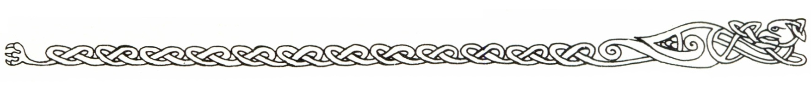
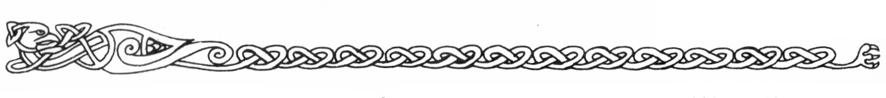

12. Viktiga SLP
I detta avsnitt beskrivs de viktigaste SLP man kan möta på Marjura. Under språk står FV för Tala före snedstrecket och FV för Läsa/skriva efter det. Under utrustning står en del intressanta saker noterade. Andra utrustningsdetaljer står angivna i de mer detaljerade beskrivningarna bland deläventyren. Läs dem noga.
Arhem
Hildur Ornetand
Syssla: Värdshusvärd
STY 14 SMI 16 KAR 19
FYS 16 INT 15 SB -
STO 13 PSY 8 KP 15
Färdigheter: Första hjälpen 15, Geografi (Marjura) 14, Räkna 2, Finna dolda ting 12, Upptäcka fara 18, Skidor 18, Orientering 18, Taktik 15. Stridsfärdigheter: Bredyxa 22, Tillhygge (slev eller eldgaffel) 19 (skada 1T6), Långbåge 18, Medelstor sköld 20. Språk: Allmänspråk 4/3 Utrustning: Hildur bär alltid en börs (3 gm, 18 sm, 29 km), husnycklar, tuggtobak och putstrasa när han är på värdshuset.
Hjälteförmåga: Stålblick
Moska
Syssla: Gycklare
STY 6 SMI 17 KAR 7
FYS 7 INT 14 SB -
STO 8 PSY 6 KP 8
Färdigheter: Spela och sjunga (se beskrivning), Akrobatik (se beskrivning), Stjäla föremål 16, Gömma sig 15, Hoppa 3, Smyga 3, Upptäcka fara 1, Finna dolda ting 3, Dolk 15. Språk: Allmänspråk 4/1 Utrustning: Krumhorn, mandolin, liten börs (3 sm, 21 km), liten silverspegel, liten dosa fårfett.
Rurik Ornetand
Syssla: Dräng
STY 17 SMI 16 KAR 12
FYS 13 INT 8 SB -
STO 13 PSY 8 KP 13
Färdigheter: Skidor 15, Orientering 14, Övertala 2, Gömma sig 10, Smyga 6, Finna dolda ting 7, Upptäcka fara 10. Stridsfärdigheter: Bredyxa 11, Dolk 13, Långbåge 11, Medelstor sköld 11. Språk: Allmänspråket 4/0
Asimund Mogger
Syssla: Köpman
STY 5 SMI 18 KAR 9
FYS 11 INT 14 SB -
STO 5 PSY 11 KP 8
Färdigheter: Administration/Juridik 17, Kulturkännedom (allmän) 15, Räkning 4, Schack/brädspel 19, Värdesätta (allmän) 20, Köpslå 20, Finna dolda ting 10, Upptäcka fara 14, Lyssna 2, Gömma sig 4, Dolk 6. Språk: Allmänspråk 5/4 Utrustning: Börs med 22 gm, 36 sm, 14 km.
Gizmo Mogger
Syssla: Köpman
STY 6 SMI 12 KAR 9
FYS 12 INT 16 SB -
STO 6 PSY 13 KP 8
Färdigheter: Administration/Juridik 20, Kulturkännedom (allmän) 8, Räkning 5, Schack/brädspel 10, Värdesätta (allmän) 18, Köpslå 18, Finna dolda ting 12, Upptäcka fara 9, Lyssna 4, Gömma sig 4, Dolk 4. Språk: Allmänspråk 5/5 Utrustning: Börs med 12 gm, 24 sm, 18 km.
Ronald Mogger
Syssla: Köpmanslärling
STY 8 SMI 8 KAR 5
FYS 12 INT 7 SB -
STO 5 PSY 16 KP 9
Färdigheter: Värdesätta (allmän) 5¹, Köpslå 7, Gömma sig 1, Smyga 1, Finna dolda ting 1, Upptäcka fara 3, Kortsvärd 8. Språk: Allmänspråk 4/2 Utrustning: Börs med 6 gm, 10 sm, 10 km.
¹ Tror sig ha ungefär FV 16 och uttalar sig gärna tvärsäkert.
Gwellmyn
Syssla: Köpman
STY 14 SMI 8 KAR 16
FYS 10 INT 19 SB -
STO 9 PSY 17 KP 10
Färdigheter: Admistration/Juridik 16, Geologi 20, Räkning 4, Värdera (juveler) 19, Värdera (mineraler) 22, Värdera (vapen) 18, Värdera (skinn) 16, Värdera (allmänt) 14, Köpslå 17, Övertalning 15, Finna dolda ting 12, Upptäcka fara 12, Handyxa 18. Språk: Allmänspråk 4/4, dvärgiska 5/5. Utrustning: Börs med 48 gm, 13 sm.
Malek Mangus
Syssla: Shagulit
STY 20 SMI 9 KAR 14
FYS 14 INT 16 SB -
STO 14 PSY 22 KP 14
Färdigheter: Shagulism 4, Gömma sig 3, Finna dolda ting 13, Upptäcka fara 14, Övertala 15, Bluffa 17. Språk: Allmänspråk 5/4, Ithilgroms tunga 0/1, svartiska 1/0. Magiskolor: Nekromanti 20. Besvärjelser: Se särskild lista. Särskilda förmågor: Orädd, Tålig, Snabbläkning, Stålblick. Utrustning: Börs med 12 gm, 40 sm, 5 km.
Grubertin Gråhud
Syssla: Advokat
STY 9 SMI 6 KAR 14
FYS 8 INT 17 SB -
STO 9 PSY 11 KP 9
Färdigheter: Administration/Juridik 17, Heraldik 10, Kulturkännedom (allmän) 15, Räkning 4, Språkkunskap 12, Värdesätta (allmän) 9, Bluff 15, Muta 17, Övertalning 16, Undre världen 13, Dolk 6. Språk: Allmänspråket 5/5, älviska 1/1. Utrustning: Börs med 5 gm, 68 sm, 15 km.
Shulaban Ormtunga
Syssla: Tjuv
STY 6 SMI 16 KAR 16
FYS 13 INT 14 SB -
STO 10 PSY 10 KP 12
Färdigheter: Bluff 13, Muta 14, Teckenspråk (tjuvar) 3, Gömma sig 14, Hoppa 10, Klättra 12, Smyga 16, Dyrka lås 17, Stadskännedom (Arhem) 20, Stjäla föremål 15, Undre världen 18, Finna dolda ting 10, Upptäcka fara 15. Stridsfärdigheter: Dra vapen 16, Dolk 19, Slagsmål 14. Språk: Allmänspråket 4/1. Utrustning: Börs med 16 sm, 20 km, läderrustning.
Abenazer
Syssla: Munk
STY 10 SMI 17 KAR 16
FYS 16 INT 14 SB -
STO 12 PSY 18 KP 19
Färdigheter: Första hjälpen 16, Kulturkännedom (Marjura) 16, Geografi 16, Områdeskännedom (Marjura) 16, Sjunga 3, Klättra 17, Överlevnad (arktisk) 21, Kamouflage 12, Finna dolda ting 16, Upptäcka fara 18, Lyssna 16. Stridsfärdigheter: Trästav 21, Judo 21. Språk: Allmänspråk 5/3 Hjälteförmåga: Språkets gåva
Gistacki
Syssla: Brottare
STY 19 SMI 17 KAR 14
FYS 18 INT 7 SB 1T4
STO 16 PSY 6 KP 17
Färdigheter: Första hjälpen 10, Akrobatik 3, Hoppa 10, Klättra 10, Smyga 14, Upptäcka fara 6. Stridsfärdigheter: Slagsmål 20, Slagsvärd 20, Långbåge 12, Judo 20, Karate 16, Stor sköld 14. Språk: Allmänspråket 3/1. Utrustning: Äger lång ringbrynja.
Robur Rödvad
Syssla: Fixare
STY 9 SMI 16 KAR 10
FYS 12 INT 16 SB -
STO 8 PSY 12 KP 10
Färdigheter: Första hjälpen 15, Räkning 1, Språkkunskap 9, Värdesätta (allmän) 14, Bluff 16, Köpslå 16, Muta 16, Övertalning 14, Gömma sig 12, Förklädnad 16, Hasardspel 8, Låsdyrkning 7, Finna dolda ting 14, Upptäcka fara 10, Överlevnad (arktisk) 15. Stridsfärdigheter: Kortsvärd 16, Dolk 16. Språk: Allmänspråk 4/2, svartiska 2/0. Utrustning: Börs med 40 sm, 60 km, läderrustning
Guster Svartskäkta
Syssla: Krigare, smugglare
STY 16 SMI 9 KAR 7
FYS 12 INT 15 SB -
STO 12 PSY 9 KP 12
Färdigheter: Första hjälpen 12, Värdesätta (allmän) 12, Förhöra 17, hantera fällor 10, Gömma sig 14, Undre världen 14, Finna dolda ting 16, Upptäcka fara 15, Djurträning (hund) 16, Kamouflage 16, Skidor 17. Stridsfärdigheter: Lätt armborst 19, Stridsyxa 15, Dirk 12, Medelstor sköld 16. Språk: Allmänspråket 4/2, svartiska 2/0. Utrustning: Börs med 13 gm, 40 sm, 16 km, lång ringbrynja och romersk hjälm.
Svavelträsket
Abrelax
Syssla: Slavdrivare
STY 26 SMI 8 KAR 4
FYS 17 INT 6 SB 1T6
STO 21 PSY 7 KP 19
Färdigheter: Stadskännedom (Arhem) 16, Undre världen 14, Lyssna 14, Upptäcka fara 13, Simma 3, Finna dolda ting 10, Orientering 12. Stridsfärdigheter: Slagsmål 15, Träklubba 13, Tvåhandssvärd 13. Språk: Allmänspråket 2/0, svartiska 3/0. Utrustning: Knogjärn.
Sulidon Rumperlak
Syssla: Drogmakare
STY 8 SMI 7 KAR 4
FYS 12 INT 16 SB -
STO 9 PSY 8 KP 11
Färdigheter: Botanik 19, Drogkunskap 19, Första hjälpen 19 (14), Läkekonst 20 (13), Räkning 5 (1), Schack och brädspel 17 (11), Värdesätta mat/kryddor 16, Zoologi 16, Hasardspel 15 (7), Provsmaka 19, Dolk 5 (1). Språk: Allmänspråket 4(2)/4(2) Utrustning: Kontanter (38 gm, 18 sm, 30 km).
Värden inom parentes gäller när han är spritpåverkad.
Kvicksilvergruvan
Blatifagus den bleke
Syssla: Drake, 5000 år
STY 85¹ SMI 8
FYS 27 INT 19 SB 6T6
STO 100 PSY 18 KP 63
¹ Styrkan är nedsatt på grund av hans svaghet.
Färdigheter: Geografi 14, Historia 8, Kunskap om magi 13, Värdesätta (smycken) 21, Värdesätta (mineraler) 21, Bluff 19, Förhöra 19, Övertala 19, Överklasstil 19, Schack och brädspel 19, Lyssna 18, Finna dolda ting 18, Upptäcka fara 18, Provsmaka 18. Stridsfärdigheter: Bett 26, Svanssnärt 24, Klor 26, Eldsprut 19. Språk: Allmänspråk 5/1, älviska 4/1, svartiska 3/0, ödlespråk 3/0, drakspråk 5/0. Naturligt skydd: Rygg 10, buk 5.
Trodax Draconicus
Syssla: Magiker
STY 12 SMI 10 KAR 5
FYS 9 INT 18 SB -
STO 14 PSY 23¹ KP 12
¹ plus ytterligare 15.
Färdigheter: Marjuras historia 5, Språkkunskap 10, Skulptering och målning 3, Värdera (konst) 12, Upptäcka fara 5, Finna dolda ting 4, Lyssna 4, Första hjälpen 4. Språk: Allmänspråket 5/4, drakspråket 3/2, älviska 2/0. Magiskolor: Elementarmagi 14, Animism 5. Besvärjelser: ANTIMAGI S10, VARSEBLIVNING S4, LADDNING S4, SKINGRA S4, MAGNESIUMFLAMMA S16, ELD S12, LJUSVÄG S8, BESKYDDA S12, TILLKALLA KRÄLDJUR S14, TALA MED KRÄLDJUR S12.
Druidtemplet och glaciären
Perrima
Syssla: Kmordadruid
STY 12 SMI 16 KAR 18
FYS 13 INT 16 SB -
STO 11 PSY 17 KP 12
Färdigheter: Astrologi 17, Första hjälpen 16, Kulturkännedom (allmän) 12, Kulturkännedom (kvurer) 15, Språkkunskap 6, Akrobatik & dans 5, Finna dolda ting 16, Skidor 18, Orientering¹, Överlevnad (arktisk)¹. Språk: Allmänspråk 4/4, kvuriska 3/0, jättespråk 2/0. Magiskolor: Kmordakraft 19. Besvärjelser: ANTIMAGI¹, SKINGRA¹, VÄDERKONTROLL (under vinter)¹, FROST¹, FRAMMANA GLACIAL¹, HELA¹.
¹ Lyckas alltid. Se beskrivning för närmare detaljer. Magin rör sig egentligen om gudomliga krafter.
Stor-Thule
Syssla: Jättehövding
STY 64 SMI 13 KAR 14
FYS 19 INT 16 SB 4T6
STO 60 PSY 20 KP 39
Färdigheter: Första hjälpen 17, Taktik 15, Fiska 20, Jaga 20, Ilmarsch 20, Spåra 17, Orientering 20, Områdeskännedom 18, Kunskap om magi 5, Upptäcka fara 12. Stridsfärdigheter: Stor stridsklubba 18. Språk: Jättespråk 5/1, allmänspråket 371, svartiska 2/0. Utrustning: Stor-Thule har en tornklocka som hjälm. Den har abs 80.
Basimor Armgrove
Syssla: Jättebonde
STY 63 SMI 10 KAR 13
FYS 24 INT 6 SB 4T6
STO 58 PSY 12 KP 41
Färdigheter: Upptäcka fara 12, Fiska 18, Jaga 14, Ilmarsch 15, Spåra 14, Finna dolda ting 12, Orientering 15. Stridsfärdigheter: Tvåhandsyxa 9, Påk 14. Språk: Jättespråk 4/0, allmänspråket 1/0. Utrustning: Basimors hjälm absorberar 10.
Råbald Niding
Syssla: Jätte, fredlös
STY 62 SMI 4 KAR 4
FYS 22 INT 6 SB 4T6
STO 55 PSY 14 KP 38
Färdigheter: Köpslå 7, Finna dolda ting 14, Lyssna 16, Upptäcka fara 18, Jaga 15, Fiska 15, Kamouflage 17, Spåra 15, Överlevnad (arktisk) 19. Stridsfärdigheter: Stor träklubba 13. Språk: Jättespråket 4/1, allmänspråket 2/0, svartiska 1/0.
Uxu
Syssla: Kvurerschaman
STY 12 SMI 16 KAR 9
FYS 14 INT 14 SB -
STO 8 PSY 16 KP 11
Färdigheter: Astrologi 16, Drogkunskap 14, Läkekonst 16, Botanik 14, Första hjälpen 15, Finna dolda ting 15, Dolk 13. Språk: Kvurerspråket 4/0, allmänspråket 1/0.
Umma
Syssla: Kvurerköpman
STY 13 SMI 6 KAR 10
FYS 17 INT 14 SB -
STO 11 PSY 10 KP 14
Färdigheter: Första hjälpen 8, Räkning 1, Värdesätta (hudar) 19, Värdesätta (mat) 16, Värdesätta (kvurerkonst) 15, Köpslå 15, Muta 9, Finna dolda ting 3, Smyga 5, Upptäcka fara 6. Stridsfärdigheter: Kortbåge 16, Dolk 13. Språk: Kvurerspråk 4/0, allmänspråk 3/1.
Järntornet
Grafficanus Majus
Syssla: Shagulit (patriark)
STY 15 SMI 7 KAR 7
FYS 19 INT 19 SB 1T4
STO 9 PSY 22 KP 14
Färdigheter: Shagulism 5, Astrologi 16, Geografi 14, Historia 14, Kulturkännedom (allmän) 14, Områdeskännedom (Marjura) 15, Räkning 5, Språkkunskap 12, Förhöra 17, Finna dolda ting 4, Upptäcka fara 5, Klor 12, Demonstav 14 (särskild SB). Språk: Allmänspråket 5/5, svartiska 3/0, älviska 2/1. Magiskolor: Nekromanti 22, Mentalism 5 Besvärjelser: MOTSTÅNDSKRAFT S14, HJÄRNBLANK S8, LÅNGSAMHET S8, samt se särskild lista. Särskilda förmågor: Stålblick Orädd, Snabbläkning, Tålig.
Gobrugda
Syssla: Shagulit (patriark)
STY 18 SMI 8 KAR 11
FYS 20 INT 18 SB 1T4
STO 14 PSY 24 KP 17
Färdigheter: Shagulism 5, Geografi 10, Historia 12, Räkning 3, Förhöra 16, Finna dolda ting 18, Lyssna 16, Upptäcka fara 18, Överlevnad (arktisk) 12. Språk: Allmänspråket 5/4, svartiska 3/0, jättespråket 1/0. Magiskolor: Nekromanti 22. Besvärjelser: Se särskild lista. Särskilda förmågor: Stålblick. Orädd, Snabbläkning, Tålig.
Doktor Rufat Zeed
Syssla: Balsamerare
STY 14 SMI 4 KAR 7
FYS 10 INT 16 SB -
STO 12 PSY 13 KP 11
Färdigheter: Hantverk: balsamering 5, Första hjälpen 17, Drogkunskap 16, Läkekonst 18, Räkning 4, Provsmaka 16, Upptäcka fara 3, Finna dolda ting. Språk: Sitt avlägsna hemlands modersmål 4/3
Jomorref
Syssla: Shagulit (huligan)
STY 9 SMI 8 KAR 6
FYS 12 INT 17 SB -
STO 9 PSY 14 KP 11
Färdigheter: Shagulism 2, heraldik 12, Kulturkännedom (allmän) 8, Räkning 5, Förhöra 15, Sjunga 3, Överklasstil 16, Finna dolda ting 4, Upptäcka fara 3. Språk: Allmänspråk 5/3 Magiskolor: Nekromanti 12 Besvärjelser: Se särskild lista.
Melobin vackre
Syssla: Lärd
STY 7 SMI 10 KAR 18
FYS 9 INT 17 SB -
STO 11 PSY 12 KP 10
Färdigheter: Administration/juridik 6, Heraldik 7, Historia 10, Första hjälpen 4, Kulturkännedom (allmän) 12, Språkkunskap 10, Bluff 19, Muta 16, Övertalning 18, Förklädnad 11, Upptäcka fara 3, Finna dolda ting 3, Dolk 9. Språk: Allmänspråk 5/4, svartiska 1/0, älviska 2/1, jättespråket 1/0.
Barbica
Syssla: Shagulit (mogul)
STY 14 SMI 17 KAR 11
FYS 20 INT 12 SB -
STO 9 PSY 14 KP 15
Färdigheter: Shagulism 3, Kulturkännedom (allmän) 8, Områdeskännedom 14, Akrobatik 3, Gömma sig 12, Hoppa 14, Klättra 14, Smyga 14, Finna dolda ting 5, Upptäcka fara 8, Orientering 13, Överlevnad (arktisk) 17. Stridsfärdigheter: Klor 18, Karate 16, Judo 16. Språk: Allmänspråk 4/2, svartiska 2/0 Magiskolor: Nekromanti 16 Besvärjelser: Se särskild lista. Särskilda förmågor: Orädd
Shaguliternas besvärjelser
Shaguliterna lär sig nekromantibesvärjelserna på ungefär samma sätt. Här följer vad varje grad av Shagulism innebär i besvärjelsekunskaper. SL bestämmer själv vilka besvärjelser varje shagulit har i huvudet under i ett visst äventyr.
Novis (Nekromanti 7): BESUDLA S8, PARALYSERING S3.
Huligan (Nekromanti 12): BESUDLA S13, PARALYSERING S8, KONTROLLERA LÄGRE ODÖD S7, RÄDSLA S6, BLINDHET S5, TALA MED DÖD S4, ANIMERA DÖD S3.
Mogul (Nekromanti 16): BESUDLA S17, PARALYSERING S12, KONTROLLERA LÄGRE ODÖD S11, RÄDSLA S10, BLINDHET S9, TALA MED DÖD S8, ANIMERA DÖD S7, PANIK S6, KONTROLLERA ANDAR S5, SMÄRTA S5, TERROR S4, DÖDSHAND S3.
Columna (Nekromanti 20): BESUDLA S21, PARALYSERING S16, KONTROLLERA LÄGRE ODÖD S15, RÄDSLA S14, BLINDHET S13, TALA MED DÖD S12, ANIMERA DÖD S11, PANIK S10, KONTROLLERA ANDAR S9, SMÄRTA S9, TERROR S8, DÖDSHAND S7, KONTROLLERA HÖGRE ODÖD S6, VOODOORITUAL S5, LIVS-UTÖMNING S5.
Patriark (Nekromanti 22): BESUDLA S23, PARALYSERING S18, KONTROLLERA LÄGRE ODÖD S17, RÄDSLA S16, BLINDHET S15, TALA MED DÖD S14, ANIMERA DÖD S13, PANIK S12, KONTROLLERA ANDAR S11, SMÄRTA S11, TERROR S10, DÖDSHAND S9, KONTROLLERA HÖGRE ODÖD S8, VOODOORITUAL S7, LIVSUTÖMNING S7.

